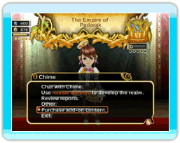

You can purchase and download add-on content to enhance your play experience in FINAL FANTASY CRYSTAL CHRONICLES: My Life as a King.
 You can access this feature by selecting "Purchase Add-on Content" from either the main menu or the in-game castle menu. Purchasing add-on content requires Wii Points.
If you delete add-on content at any time, games saved using the data in the add-on content will become inaccessible. You must download the deleted add-on content again to enable loading of those saved games. Downloading purchased add-on content will not require further Wii Points.
Note: Add-on content is purchased with Wii Points. Visit the Wii Shop Channel or the Nintendo web page for instructions regarding the purchase of Wii Points.
● Dungeon Pack (Available: 20/05/08)
300 Wii Points / Blocks Required: 1
Adds 11 dungeons to the game. Clearing these dungeons raises the limit on weapon, armor, and item shops as well as taverns, parks, gaming halls, and houses.
● Triple Race Pack (Available: 20/05/08)
800 Wii Points / Blocks Required: 1
Adds Lilty huts, Selkie dens and Yuke shacks to the buildings list.
● Lilty Hut (Available: 20/05/08)
300 Wii Points / Blocks Required: 1
Adds Lilty huts to the building list. Lilties are naturally strong and make the best warriors.
● Selkie Den (Available: 20/05/08)
300 Wii Points / Blocks Required: 1
Adds Selkie dens to the building list. Selkies are naturally swift and make the best thieves.
● Yuke Shack (Available: 20/05/08)
300 Wii Points / Blocks Required: 1
Adds Yuke shacks to the building list. Yukes are naturally magic-savvy and make the best mages.
● The King's New Cloak (Available: 20/05/08)
100 Wii Points / Blocks Required: 3
Purchase an additional costume for the king. Changing costumes is performed within the castle.
● Chime's Knell (Available: 20/05/08)
100 Wii Points / Blocks Required: 3
Purchase an additional costume for Chime. Changing costumes is performed within the castle.
● Luxurious House (Available: 20/05/08)
100 Wii Points / Blocks Required: 1
Adds luxurious houses to the building list. These houses recall an even larger family to the kingdom, boosting income of gil.
● Sacred Shrine (Available: 20/05/08)
200 Wii Points / Blocks Required: 1
Adds a dungeon containing the ability to build a sacred shrine. Sacred shrines built in the kingdom temporarily boost adventurers' stats.
Warning!
The add-on content described in this section is data used by the game FINAL FANTASY CRYSTAL CHRONICLES: My Life as a King. You cannot play using the add-on content alone.